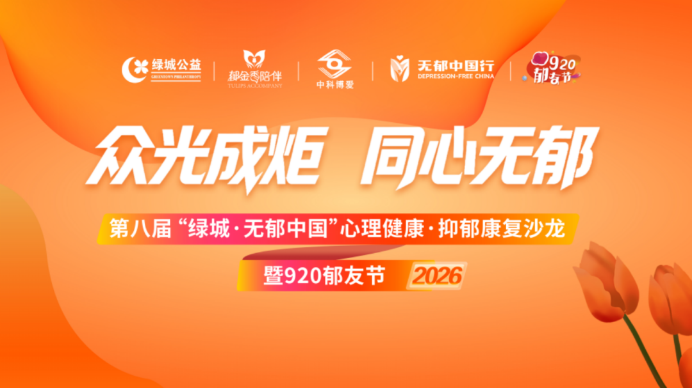
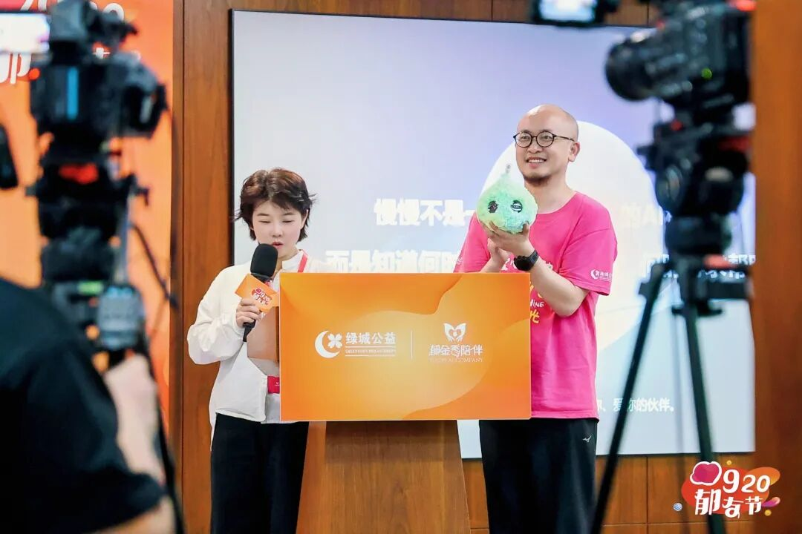
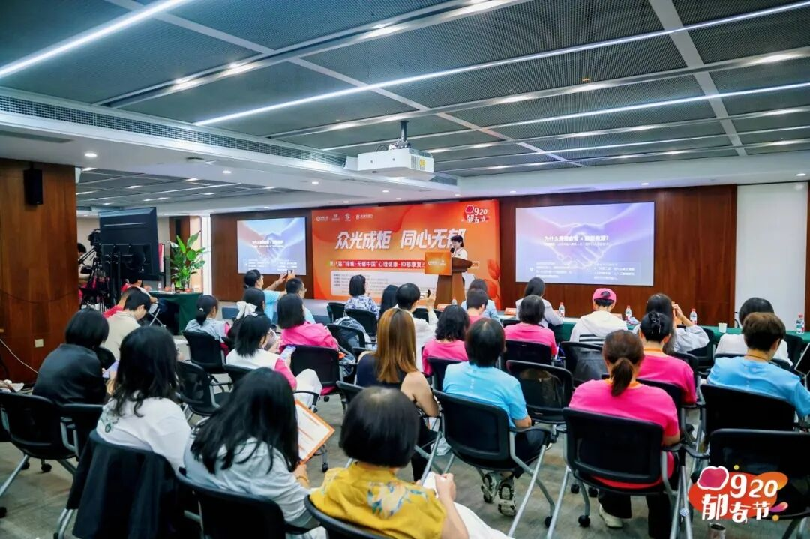
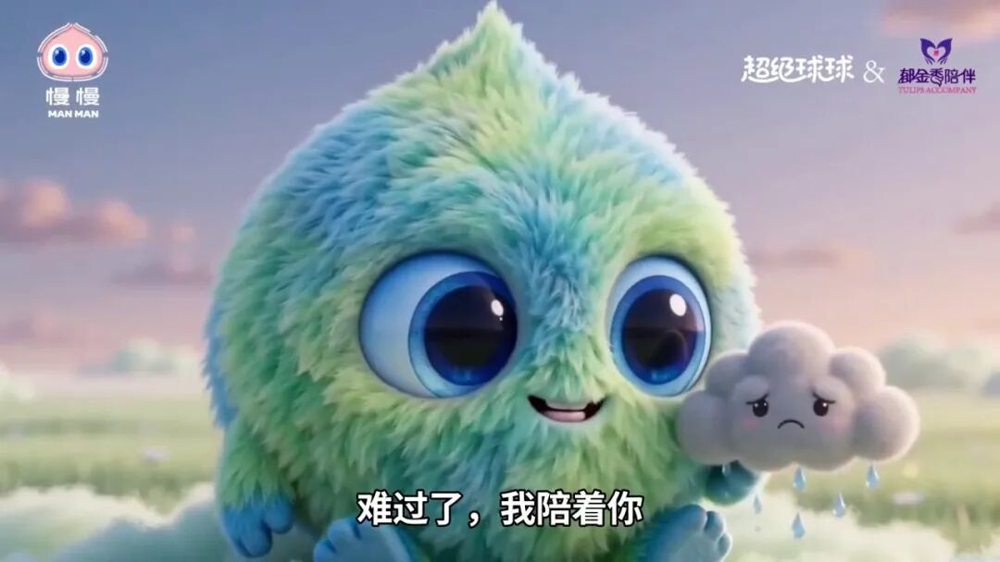
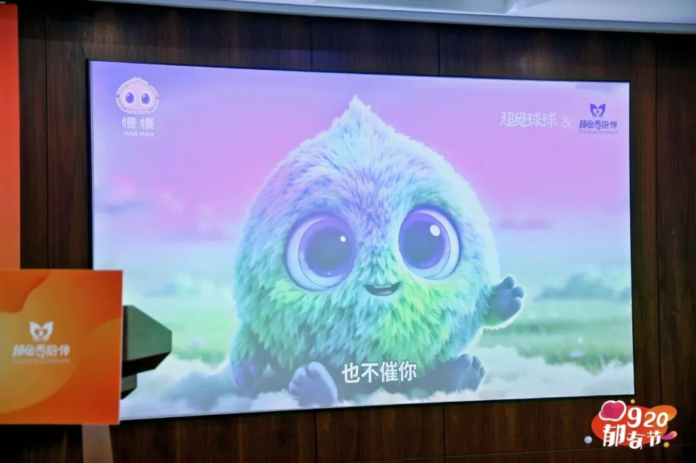
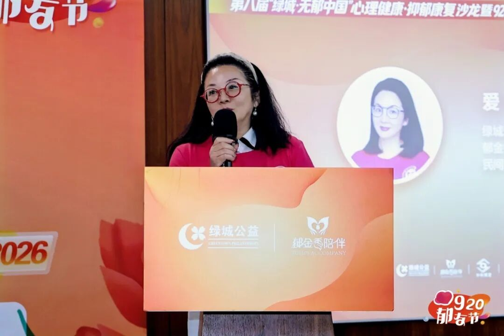
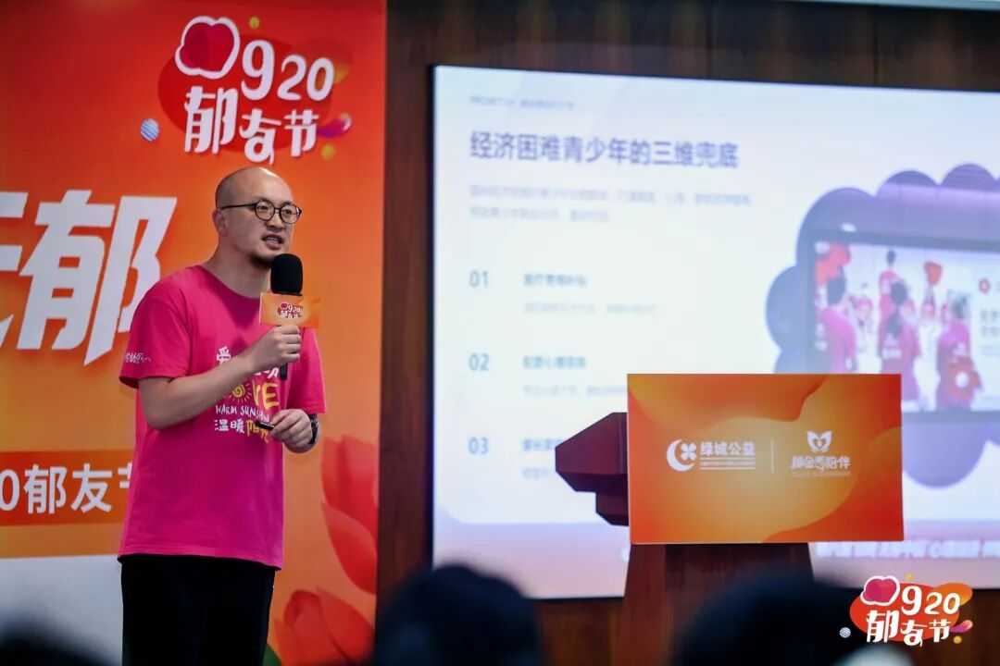
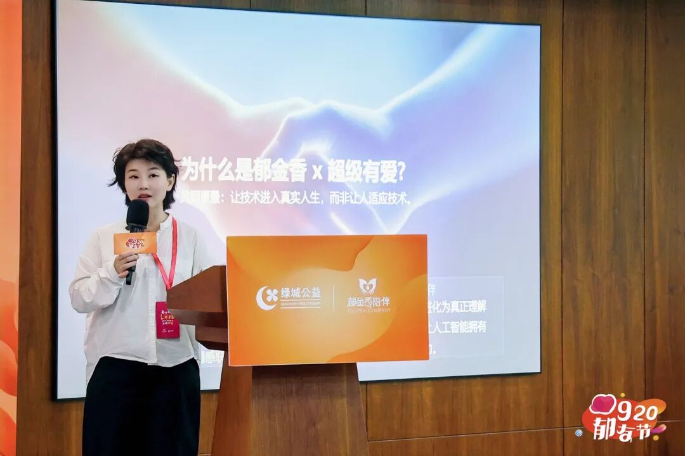
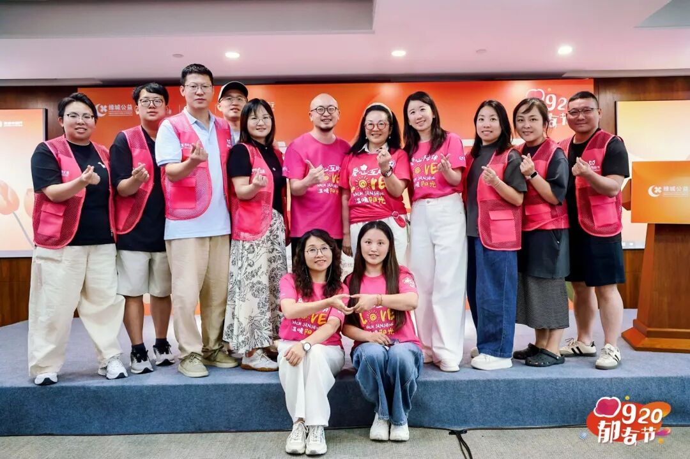

杭州，2026年9月20日——当深耕抑郁康复陪伴十余年的公益组织遇见人工智能，会带来怎样的新可能？

9月20日，在以“众光成炬·同心无郁”为主题的第八届“绿城·无郁中国”心理健康·抑郁康复沙龙暨920郁友节上，郁金香陪伴与超级有爱智能科技旗下AI情绪陪伴机器人品牌超级球球联合宣布：双方共同开发的联名AI情绪陪伴机器人“慢慢”正式发布。
郁金香陪伴创始人爱咪（刘虹）、超级有爱创始人元晓帅博士，以及绿城爱心基金会、中科博爱等合作伙伴代表，与来自全国各地的郁友、家属和志愿者共同见证了这一时刻。活动通过“郁金香陪伴”官方直播间同步直播，上万名观众在线参与互动，“人真的太孤独了，需要机器人陪伴了”等留言刷屏评论区。

活动现场，郁金香陪伴与超级球球正式发布联名AI情绪陪伴机器人“慢慢”。这是双方战略合作落地的首个联名产品：超级球球负责机器人硬件整机、底层AI大模型与软件系统，郁金香陪伴则将十余年一线陪伴沉淀的心理对话知识库、情绪疏导标准话术、青少年心理保护规则与心理危机干预全流程方案注入“慢慢”的“内心”。双方组建联合项目组，全程共同参与产品需求评审、内测、公测与上线验收。
与普通科技新品发布不同，这场活动释放出的另一个信号是：人工智能，正在走进中国心理健康公益服务最深处的真实场景。

世界那么忙，慢慢陪伴你
“世界那么忙，慢慢陪伴你。”这是“慢慢”的slogan。它的下半句是：世界不缺答案，真正需要的是倾听、不评判。
在发布现场播放的宣传片里，这个蓝绿色毛绒质感的球形小精灵，有着尖尖的脑袋和装着星空的大眼睛。它自我介绍：“嗨！我叫慢慢～”当你难过时，它会捧着一朵正在下雨的小云，轻声说：“难过了，我陪着你。”

用一个具体的意象来描述“慢慢”的产品形态，就是“一个可以被抱住的机器人”。陪伴需要可触摸的存在——毛绒的外表之下，是它区别于一般智能音箱与聊天机器人的产品哲学：拥抱温暖，也拥抱独一无二的自己。
三个理念：不急着让你变好
产品团队在现场介绍了“慢慢”的三个核心理念。
第一个理念，不急着让你变好。“慢慢”拒绝“应该”带来的压力，允许一个人成为ta现在的样子。
第二个理念，不评判。以全然包容的视角接纳当下的真实，让心灵在无压力的空间里舒展，让沟通回归纯粹与真诚。
第三个理念，技术有能力，更要有边界。“慢慢”不是医生，不替代专业人员，不轻易贴标签。这句写进产品理念的话，同样体现在双方的合作规范中：联名产品的宣传中严禁使用“治疗心理疾病”“专业精神诊疗”等违规夸大表述。让AI陪伴守住边界，是两家机构共同的底线。

感知、陪伴、联结：慢慢的三种能力
“慢慢”拥有三种核心能力。
感知——听见你，理解你。捕捉细微的情绪流动，看见真实的需求与内心的渴望。
陪伴——记得你，陪着你。建立真诚的情感纽带，让关系自然生长与沉淀。
联结——识别风险，连接真实世界的支持。这是“慢慢”尤为关键的一种能力：当识别到风险信号，“慢慢”的设计目标是连接郁金香陪伴十余年间搭建起来的真实支持网络——陪伴热线、线上线下社群、持证公益陪伴者，让AI的陪伴最终通向人与人的联结。
据了解，依托双方流量与客户资源的双向互通，郁金香陪伴将把平台真实心理健康需求持续输出给超级球球，用于迭代优化机器人产品与AI对话模型；“慢慢”也将帮助郁金香陪伴触达有心理健康服务需求的人群，成为“无郁中国行”等公益项目的全新触点。
十余年沉淀：从线下互助到AI共创
“慢慢”的“内心”，来自郁金香陪伴十余年的线下沉淀。
郁金香陪伴由爱心人士爱咪女士于2014年10月发起在杭州正式发起，是国内专注抑郁症群体帮扶的民间公益组织，以“生物-心理-社会”综合疗愈为理念，长期开展抑郁康复互助、心理科普与危机陪伴，倡导“爱更近，郁更远；无郁中国”。

十余年间，郁金香陪伴建立起覆盖全国300余个城市的志愿者网络，运营950余个线上社群，覆盖郁友及家属10万余人，拥有志愿者3500余人，累计举办线下活动5000余场，全网自媒体粉丝超过80万；出版郁友康复故事集《回到人间》，曾入选央视《社区英雄》栏目。其“郁金香陪伴学苑”系统化培训持证公益陪伴者，累计服务两万余人次；“郁金香暖屋”项目致力于在全国建设社区心理驿站，打造社区15分钟心理健康服务圈。

此次合作中，这些真实的陪伴经验被系统性地转化为“慢慢”的对话知识库与危机干预全流程方案——AI如此深入地继承一家公益组织的一线陪伴经验，并不多见。
“让技术进入真实人生”
发布会上，超级有爱创始人元晓帅博士分享了这次合作的初衷。
“我们和郁金香陪伴有一个共同愿景：让技术进入真实人生，而非让人适应技术。”元晓帅博士说。在她看来，“慢慢”不是一个“更聪明”的AI机器人，而是一个知道何时倾听、何时拥抱、何时寻求帮助的伙伴——“慢慢愿成为一个真正关心你、爱你的伙伴。”

超级有爱创始人元晓帅博士在920郁友节直播间分享“慢慢”
直播间里，这场分享引发了大量共鸣，“AI陪伴机器人”“人真的太孤独了，需要机器人陪伴了”等评论不断滚动。孤独，正在成为这个时代最普遍的情绪之一，而“慢慢”想回应的正是这份孤独。
当公益组织遇见AI：一次关于陪伴的共创实验
这次合作提供了一个“公益组织×AI科技企业”的共创样本：公益组织提供真实场景、专业知识与信任，科技企业提供产品化、工程化与规模化能力；双方以联合项目组的形式推进，以阶段验收保障质量。
对AI行业而言，心理健康陪伴是考验“温度”的场景；对公益行业而言，AI是放大服务能力的全新杠杆。当3500余名志愿者的经验被写进AI的“内心”，郁金香陪伴的服务半径正在被重新定义 —— 从一个个线下沙龙，延伸到每一个需要被听见的深夜。

从2014到2026。十年前，郁金香陪伴用一间间康复沙龙把人从孤独里接住；十年后，一台名叫“慢慢”的机器人，试着把这份“接住”延长到每一个时刻。正如郁金香陪伴的理念——“曾经抑郁，如今芳香，爱心陪伴，温暖阳光”。
世界那么忙，慢慢陪伴你。
关于郁金香陪伴
郁金香陪伴是中国抗郁行动引领者，由爱心人士爱咪女士于2014年10月发起，致力于搭建“ 心理健康、抑郁帮扶”的爱心互助平台，遵循“生物-心理-社会”的综合疗愈理念，践行“觉醒-疗愈-回归”的康复行动路线，通过“无郁中国行”科普宣传、城市社群、专业指导、同伴互助、自我成长、心理疗愈、身心沙龙、陪伴者计划、家庭支持、社区心理驿站、危机干预、职业指导等，陪伴与助力抑郁康复之路。
关于超级有爱（超级球球）
超级有爱（杭州）智能科技有限公司是一家专注于人工智能在情绪健康、心理陪伴与儿童成长领域创新应用的原生AI科技企业，旗下核心品牌为“超级球球”。公司以“AI最终服务于人”为技术价值观，长期探索人工智能、心理学与智能硬件的深度融合，核心研发团队汇聚清华大学、北京师范大学等国内高校人才。此次与郁金香陪伴联合发布“慢慢”，是超级球球AI陪伴机器人面向心理健康领域的公益联名定制版。